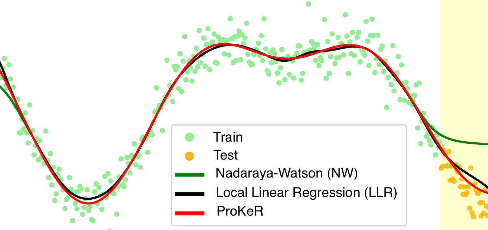
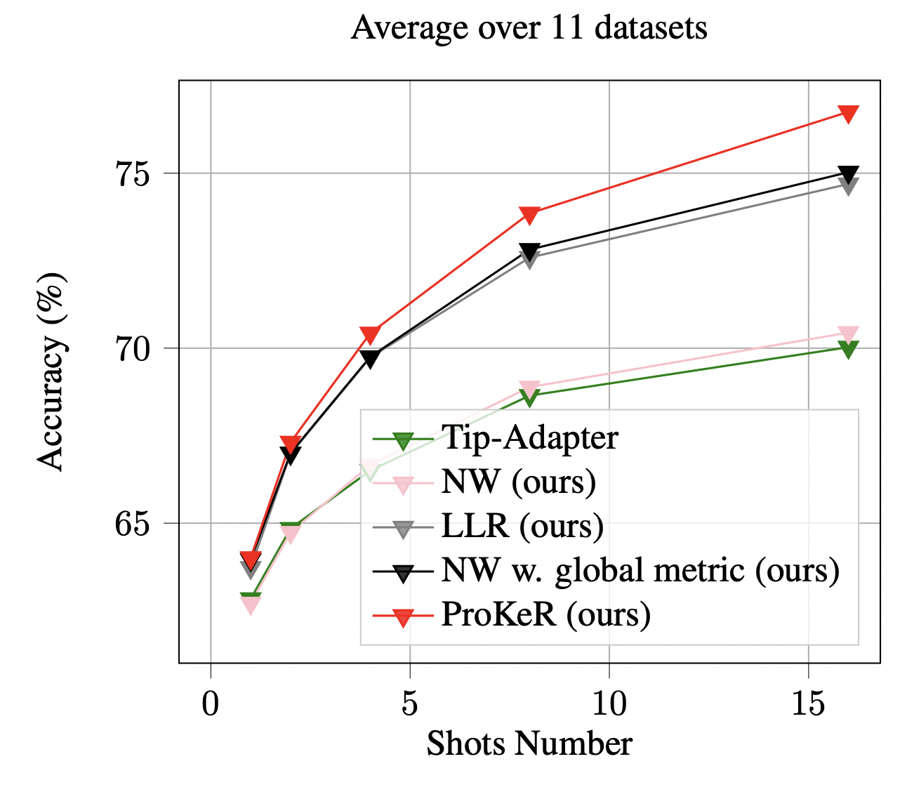
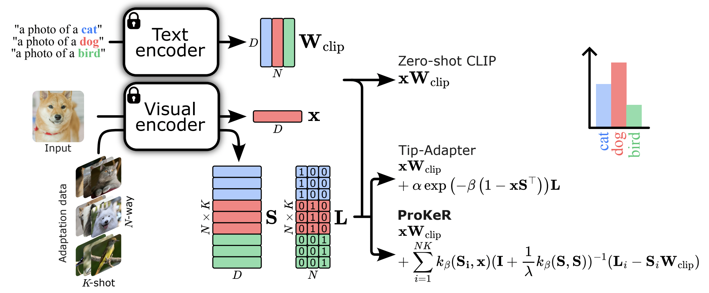

The growing popularity of Contrastive Language-Image Pretraining (CLIP) has led to its widespread application in various visual downstream tasks. To enhance CLIP's effectiveness, efficient few-shot adaptation techniques have been widely adopted. Among these approaches, training-free methods, particularly caching methods exemplified by Tip-Adapter, have gained attention for their lightweight adaptation without the need for additional fine-tuning.
In this paper, we revisit Tip-Adapter from a kernel perspective, showing that caching methods function as local adapters and are connected to a well-established kernel literature. Leveraging this insight, we offer a theoretical understanding of how these methods operate and suggest multiple avenues for enhancing over the Tip-Adapter baseline. Notably, our analysis shows the importance of incorporating global information in local adapters. Therefore, we subsequently propose a global method that learns a proximal regularizer in a reproducing kernel Hilbert space (RKHS) using CLIP as a base learner. Our method, that we call ProKeR (Proximal Kernel ridge Regression), has a closed form solution and achieves state-of-the-art performance across 11 datasets in the standard few-shot adaptation benchmark.

@article{ProKeR,
title={A Kernel Perspective on Training-Free Few-Shot Adaptation of Large Vision-Language Models},
author={Bendou, Yassir and Ouasfi, Amine and Gripon, Vincent and Boukhayma, Adnane}
journal = {arXiv preprint},
url = {https://arxiv.org/abs/2501.11175}
}